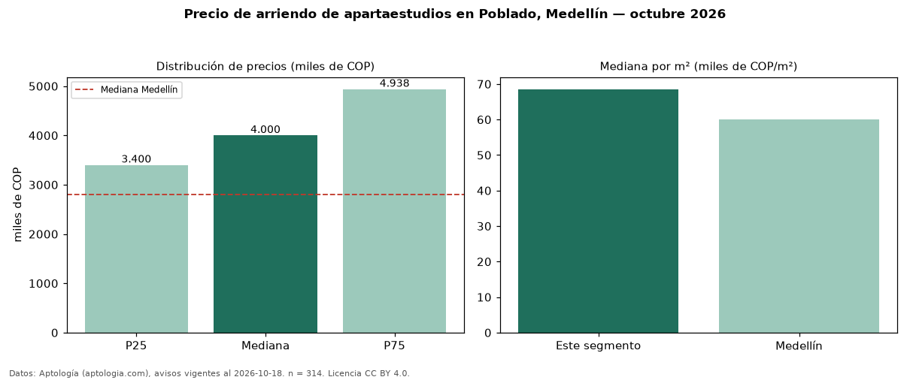

Precio de arriendo de apartaestudios en Poblado, Medellín — octubre 2026
Con 314 avisos vigentes, el canon mediano de apartaestudios en arriendo en El Poblado, Medellín es COP 4,00 millones al mes. Frente a la mediana de Medellín para apartaestudios (COP 2,80 millones), queda 43 % por encima. Por metro cuadrado, la mediana es COP 68.545/m² al mes (n = 302 avisos con área), 14 % por encima de Medellín (COP 60.000/m²). Con el precio por m² de venta del mismo segmento (COP 11,62 millones/m²), la rentabilidad bruta implícita es 7,1 % anual (aproximación con medianas de ofertas distintas). El área mediana anunciada es 56 m². Por precio mediano es el puesto 4 de 9 barrios de Medellín con al menos 30 avisos de apartaestudios en arriendo (COP): en la franja media. El estrato más frecuente es 6 (64 % de los avisos con estrato). 74 % de los avisos con el dato declara parqueadero o cochera. Datos: Aptología (aptologia.com), CC BY 4.0 — https://www.aptologia.com/apartaestudios/medellin/poblado. Archivos: PDF, CSV con las cifras y gráfica PNG.

| Avisos únicos | 314 |
|---|---|
| Percentil 25 | COP 3.400.000 |
| Mediana | COP 4.000.000 |
| Percentil 75 | COP 4.937.500 |
| Mediana por m² | COP 68.544 |
Fuente: avisos vigentes de portales inmobiliarios recopilados por Aptología, deduplicados (mínimo 30 avisos únicos por celda). Precios pedidos, no cerrados. Fecha: 2026-10-18.